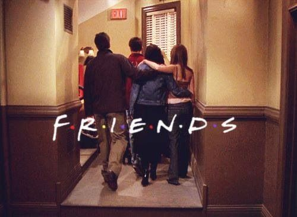
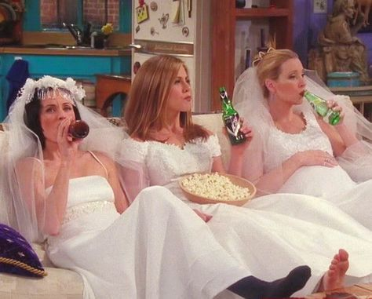
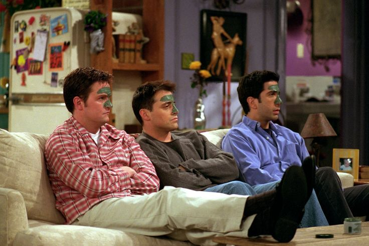
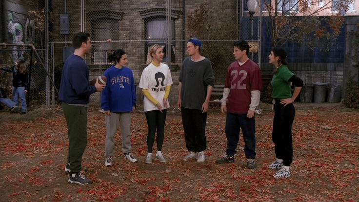
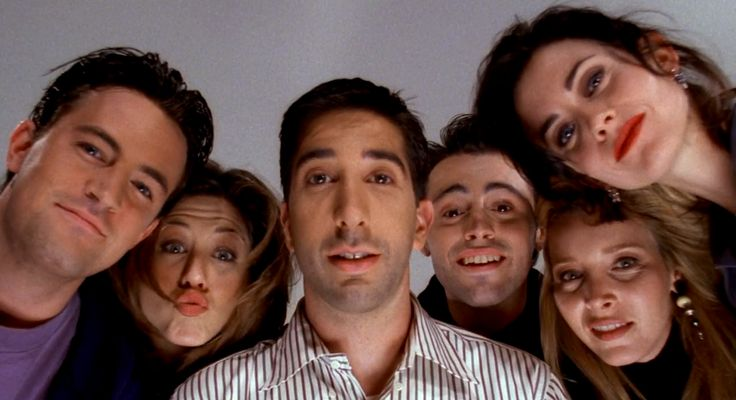
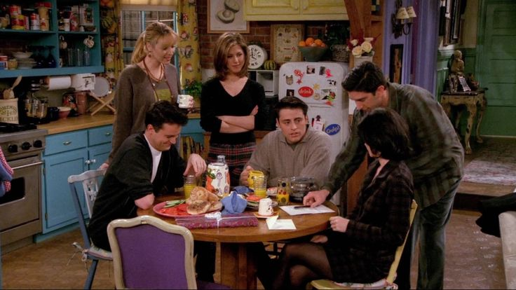
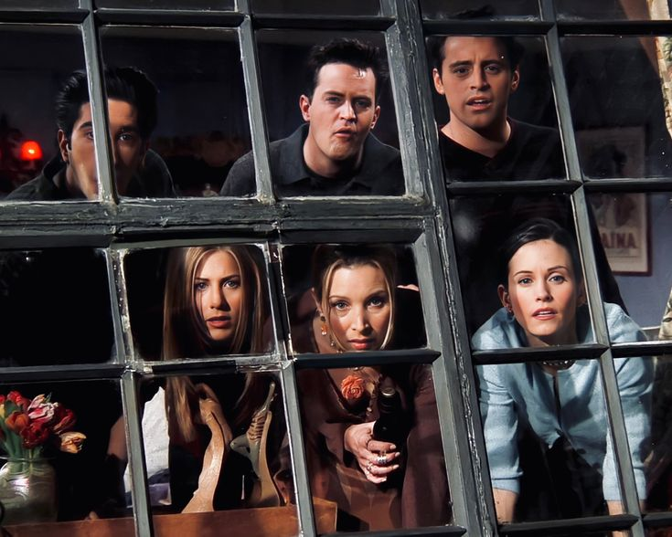
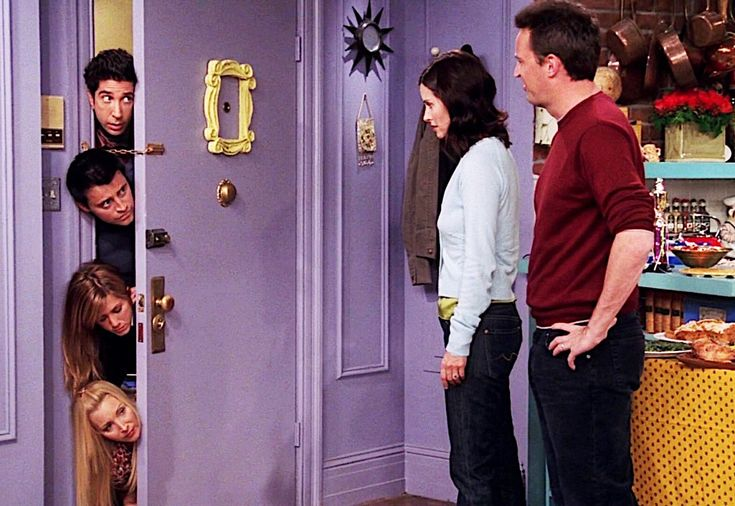
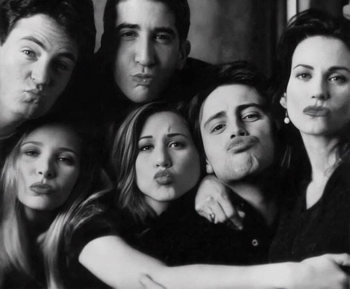
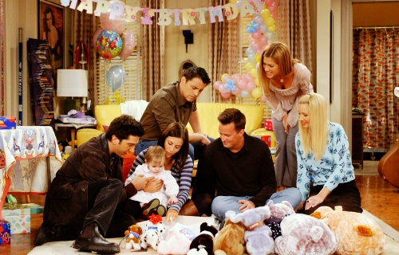

Starring: Jennifer Aniston, Courteney Cox, Lisa Kudrow, Matt LeBlanc, Matthew Perry and David Schwimmer
Created By: David Crane, Marta Kauffman and Kevin S. Bright
First Aired: September 22, 1994, on NBC
Audience Reaction: "Friends" became a cultural phenomenon, praised for its humor, chemistry among the cast, and relatable storylines.










1994 | Jennifer Aniston, Courteney Cox, Lisa Kudrow, Matt LeBlanc, Matthew Perry, David Schwimmer
"How you doin'?" ⭐ "We were on a break!" ⭐ "Pivot! Pivot! Pivot!" ⭐ "Oh.My.God!" ⭐ "Smelly Cat, Smelly Cat!" ⭐ "Could I *be* wearing any more clothes?" ⭐ "I got off the plane." ⭐ "They don't know that we know they know we know!" ⭐ "Joey doesn't share food!" ⭐ "Seven! Seven! Seven!" ⭐ "Paper! Snow! A ghost!" ⭐ "You're my lobster." ⭐ "Welcome to the real world. It sucks." ⭐ "I KNOW!" ⭐ "I don't even have a pla!" ⭐ "No uterus, no opinion!" ⭐ "You threw away my sandwich!" ⭐ "You fell asleep?" ⭐ "It’s a moo point." ⭐ "My eyes! My eyes!" ⭐ "I'm hopeless and awkward and desperate for love." ⭐ "Unagi!" ⭐ "The Routine!" ⭐ "The Holiday Armadillo!" ⭐ "See? He's her lobster!" ⭐ "Well, maybe I don’t need your money. Wait, wait, I said maybe!" ⭐ "I wish I could, but I don’t want to" ⭐ "Okay, you have to stop the Q-Tip when there’s resistance" ⭐ "Oh, come on, Will, just take off your shirt and tell us." ⭐ "You can’t just give up. Is that what a dinosaur would do" ⭐ "I 'm not great at the advice. Can I interest you in a sarcastic comment?" ⭐ "It's like all of my life everyone has always told me you're a shoe, you're a shoe, you're a shoe, you're a shoe. And then today, I just stopped and I said, what if I don't want to be a shoe? What if I want to be a purse, you know, or a hat?" ⭐ "I can't believe my parents are actually pressuring me to find one of you people" ⭐ "Gum would be perfection"